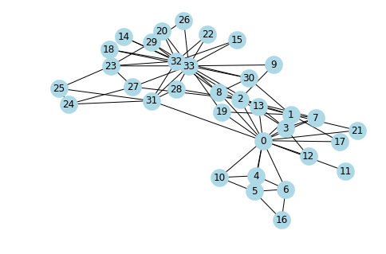
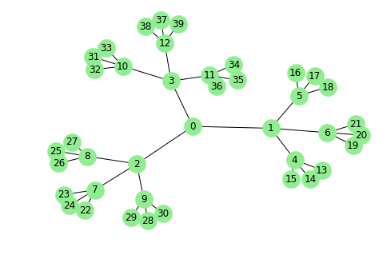
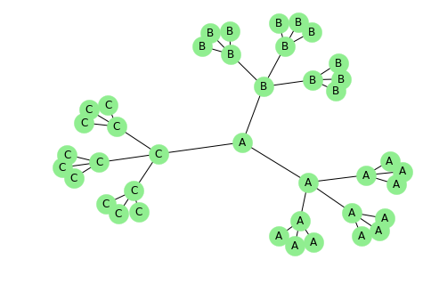
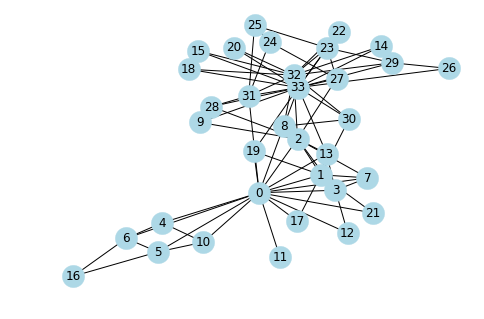

Algorithm - II
Clustering, Link Analysis, Node Classification, Link Prediction
import matplotlib.pyplot as plt import networkx as nx import seaborn as sns sns.set() %matplotlib inline
import warnings import matplotlib.cbook warnings.filterwarnings("ignore",category=matplotlib.cbook.mplDeprecation)
G = nx.karate_club_graph() nx.draw(G, node_size = 500, node_color = "lightblue", with_labels = True)

Clustering
Algorithms to characterize the number of triangles in a graph.
triangles(G[, nodes])Compute the number of triangles.transitivity(G)Compute graph transitivity, the fraction of all possible triangles present in G.clustering(G[, nodes, weight])Compute the clustering coefficient for nodes.average_clustering(G[, nodes, weight, …])Compute the average clustering coefficient for the graph G.square_clustering(G[, nodes])Compute the squares clustering coefficient for nodes.generalized_degree(G[, nodes])Compute the generalized degree for nodes.
nx.triangles(G)
{0: 18,
1: 12,
2: 11,
3: 10,
4: 2,
5: 3,
6: 3,
7: 6,
8: 5,
9: 0,
10: 2,
11: 0,
12: 1,
13: 6,
14: 1,
15: 1,
16: 1,
17: 1,
18: 1,
19: 1,
20: 1,
21: 1,
22: 1,
23: 4,
24: 1,
25: 1,
26: 1,
27: 1,
28: 1,
29: 4,
30: 3,
31: 3,
32: 13,
33: 15}
nx.transitivity(G)
0.2556818181818182
nx.clustering(G)
{0: 0.15,
1: 0.3333333333333333,
2: 0.24444444444444444,
3: 0.6666666666666666,
4: 0.6666666666666666,
5: 0.5,
6: 0.5,
7: 1.0,
8: 0.5,
9: 0,
10: 0.6666666666666666,
11: 0,
12: 1.0,
13: 0.6,
14: 1.0,
15: 1.0,
16: 1.0,
17: 1.0,
18: 1.0,
19: 0.3333333333333333,
20: 1.0,
21: 1.0,
22: 1.0,
23: 0.4,
24: 0.3333333333333333,
25: 0.3333333333333333,
26: 1.0,
27: 0.16666666666666666,
28: 0.3333333333333333,
29: 0.6666666666666666,
30: 0.5,
31: 0.2,
32: 0.19696969696969696,
33: 0.11029411764705882}
Link Analysis
PageRank
PageRank analysis of graph structure.
pagerank(G[, alpha, personalization, …])Returns the PageRank of the nodes in the graph.pagerank_numpy(G[, alpha, personalization, …])Returns the PageRank of the nodes in the graph.pagerank_scipy(G[, alpha, personalization, …])Returns the PageRank of the nodes in the graph.google_matrix(G[, alpha, personalization, …])Returns the Google matrix of the graph.
nx.pagerank(G)
{0: 0.09700181758983709,
1: 0.05287839103742701,
2: 0.057078423047636745,
3: 0.03586064322306479,
4: 0.021979406974834498,
5: 0.02911334166344221,
6: 0.02911334166344221,
7: 0.024490758039509182,
8: 0.029765339186167028,
9: 0.014308950284462801,
10: 0.021979406974834498,
11: 0.009564916863537148,
12: 0.014645186487916191,
13: 0.029536314977202986,
14: 0.014535161524273825,
15: 0.014535161524273825,
16: 0.016785378110253487,
17: 0.014558859774243493,
18: 0.014535161524273825,
19: 0.019604416711937293,
20: 0.014535161524273825,
21: 0.014558859774243493,
22: 0.014535161524273825,
23: 0.03152091531163228,
24: 0.021075455001162945,
25: 0.021005628174745786,
26: 0.015043395360629753,
27: 0.025638803528350497,
28: 0.01957296050943854,
29: 0.02628726283711208,
30: 0.02458933653429248,
31: 0.03715663592267942,
32: 0.07169213006588289,
33: 0.1009179167487121}
nx.google_matrix(G)
matrix([[0.00441176, 0.05753676, 0.05753676, ..., 0.05753676, 0.00441176,
0.00441176],
[0.09885621, 0.00441176, 0.09885621, ..., 0.00441176, 0.00441176,
0.00441176],
[0.08941176, 0.08941176, 0.00441176, ..., 0.00441176, 0.08941176,
0.00441176],
...,
[0.14607843, 0.00441176, 0.00441176, ..., 0.00441176, 0.14607843,
0.14607843],
[0.00441176, 0.00441176, 0.0752451 , ..., 0.0752451 , 0.00441176,
0.0752451 ],
[0.00441176, 0.00441176, 0.00441176, ..., 0.05441176, 0.05441176,
0.00441176]])
Hits
Hubs and authorities analysis of graph structure.
hits(G[, max_iter, tol, nstart, normalized])Returns HITS hubs and authorities values for nodes.hits_numpy(G[, normalized])Returns HITS hubs and authorities values for nodes.hits_scipy(G[, max_iter, tol, normalized])Returns HITS hubs and authorities values for nodes.hub_matrix(G[, nodelist])Returns the HITS hub matrix.authority_matrix(G[, nodelist])Returns the HITS authority matrix.
nx.hits(G)
({0: 0.07141272875773573,
1: 0.053427231205172614,
2: 0.06371906453963268,
3: 0.04242273710428976,
4: 0.01526095969815266,
5: 0.015966913494418547,
6: 0.015966913494418547,
7: 0.034343167206797434,
8: 0.0456819251308063,
9: 0.020625667757182626,
10: 0.01526095969815266,
11: 0.01061789150852051,
12: 0.01692545078543599,
13: 0.04549486406600547,
14: 0.020370345842716076,
15: 0.020370345842716076,
16: 0.004748031841562519,
17: 0.018561637031907358,
18: 0.020370345842716076,
19: 0.02971333389111539,
20: 0.020370345842716076,
21: 0.018561637031907358,
22: 0.020370345842716076,
23: 0.030156497528902444,
24: 0.011460952230139869,
25: 0.01189366439609368,
26: 0.015182734341447207,
27: 0.02681349412708363,
28: 0.0263315057833753,
29: 0.027111539646424865,
30: 0.03510623798827733,
31: 0.03837574188047834,
32: 0.06200184647463986,
33: 0.07500294214634279},
{0: 0.07141272880870855,
1: 0.05342723122870397,
2: 0.06371906455587135,
3: 0.04242273710611524,
4: 0.015260959692251741,
5: 0.01596691348769785,
6: 0.01596691348769785,
7: 0.03434316719678568,
8: 0.045681925113766106,
9: 0.020625667747004237,
10: 0.015260959692251741,
11: 0.010617891499780771,
12: 0.016925450777611116,
13: 0.045494864044925934,
14: 0.02037034582705704,
15: 0.02037034582705704,
16: 0.004748031844529441,
17: 0.01856163702009135,
18: 0.02037034582705704,
19: 0.029713333868231606,
20: 0.02037034582705704,
21: 0.01856163702009135,
22: 0.02037034582705704,
23: 0.030156497522138854,
24: 0.011460952243147787,
25: 0.011893664411194165,
26: 0.015182734336172116,
27: 0.026813494122100573,
28: 0.026331505783102067,
29: 0.02711153964098065,
30: 0.03510623797808329,
31: 0.03837574185646307,
32: 0.06200184653550559,
33: 0.0750029422437107})
nx.hub_matrix(G)
matrix([[16., 7., 5., ..., 0., 3., 4.],
[ 7., 9., 4., ..., 1., 2., 3.],
[ 5., 4., 10., ..., 3., 1., 6.],
...,
[ 0., 1., 3., ..., 6., 1., 2.],
[ 3., 2., 1., ..., 1., 12., 10.],
[ 4., 3., 6., ..., 2., 10., 17.]])
nx.authority_matrix(G)
matrix([[16., 7., 5., ..., 0., 3., 4.],
[ 7., 9., 4., ..., 1., 2., 3.],
[ 5., 4., 10., ..., 3., 1., 6.],
...,
[ 0., 1., 3., ..., 6., 1., 2.],
[ 3., 2., 1., ..., 1., 12., 10.],
[ 4., 3., 6., ..., 2., 10., 17.]])
Node Classification
This module provides the functions for node classification problem.
The functions in this module are not imported into the top level networkx namespace. You can access these functions by importing the networkx.algorithms.node_classification modules, then accessing the functions as attributes of node_classification. For example:
import networkx as nx from networkx.algorithms import node_classification G = nx.balanced_tree(3,3) nx.draw(G, node_size = 500, node_color = "lightgreen", with_labels = True)

G.node[1]['label'] = 'A' G.node[2]['label'] = 'B' G.node[3]['label'] = 'C' L = node_classification.harmonic_function(G) print(L)
['A', 'A', 'B', 'C', 'A', 'A', 'A', 'B', 'B', 'B', 'C', 'C', 'C', 'A', 'A', 'A', 'A', 'A', 'A', 'A', 'A', 'A', 'B', 'B', 'B', 'B', 'B', 'B', 'B', 'B', 'B', 'C', 'C', 'C', 'C', 'C', 'C', 'C', 'C', 'C']
LL = {} for n,l in zip(G.nodes(),L): LL.update({n:l})
nx.draw(G, node_size = 500, labels = LL, node_color = "lightgreen", with_labels = True)

Link Prediction
Link prediction algorithms.
resource_allocation_index(G[, ebunch])Compute the resource allocation index of all node pairs in ebunch.jaccard_coefficient(G[, ebunch])Compute the Jaccard coefficient of all node pairs in ebunch.adamic_adar_index(G[, ebunch])Compute the Adamic-Adar index of all node pairs in ebunch.preferential_attachment(G[, ebunch])Compute the preferential attachment score of all node pairs in ebunch.cn_soundarajan_hopcroft(G[, ebunch, community])Count the number of common neighbors of all node pairs in ebunchra_index_soundarajan_hopcroft(G[, ebunch, …])Compute the resource allocation index of all node pairs in ebunch using community information.within_inter_cluster(G[, ebunch, delta, …])Compute the ratio of within- and inter-cluster common neighb
G = nx.karate_club_graph() nx.draw(G, node_size = 500, node_color = "lightblue", with_labels = True)

preds = nx.resource_allocation_index(G, [(0,10),(9, 18), (11, 12),(30,27),(16,26)]) for u, v, p in preds: print('(%d, %d) -> %.8f' % (u, v, p))
(0, 10) -> 0.58333333 (9, 18) -> 0.05882353 (11, 12) -> 0.06250000 (30, 27) -> 0.05882353 (16, 26) -> 0.00000000